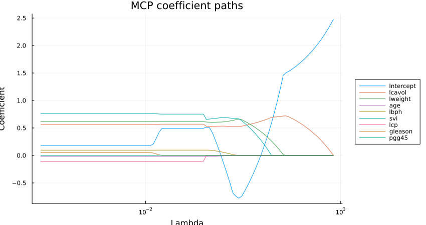
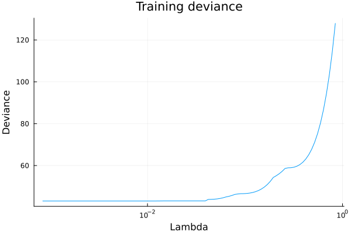
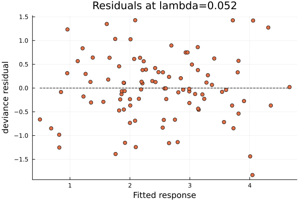
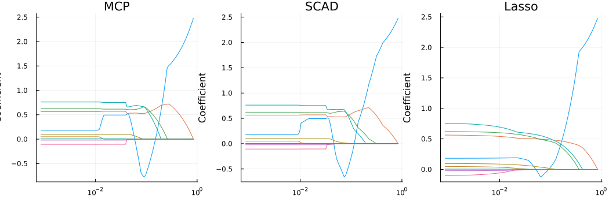

Getting started
NonConvexPenalizedRegression.jl fits regression models along a sequence of regularization strengths using MCP, SCAD, or Lasso penalties. This walkthrough follows the workflow of the ncvreg getting-started vignette, using the same Prostate dataset, but only features currently available in Julia.
Installation
Use Julia 1.10 or later.
In a Julia environment, install the package from its repository and add the packages used below:
using Pkg
Pkg.add(url="https://github.com/pnavaro/NonConvexPenalizedRegression.jl")
Pkg.add(["RData", "Plots"])RData.jl reads the dataset directly; an R installation is not required. Plots.jl renders the package's RecipesBase recipes and is otherwise optional.
Load the Prostate data
The example has 97 observations and eight clinical predictors. The response is the logarithm of prostate-specific antigen (PSA). The matching ncvreg dataset is already bundled in this package's test data, avoiding similarly named prostate datasets with different variables.
using NonConvexPenalizedRegression
using RData
using Statistics
using Plots
data_file = joinpath(
pkgdir(NonConvexPenalizedRegression), "test", "data", "Prostate.rda",
)
prostate = RData.load(data_file)["Prostate"]
X = Matrix{Float64}(prostate["X"])
y = Vector{Float64}(prostate["y"])
feature_names = ["lcavol", "lweight", "age", "lbph", "svi", "lcp", "gleason", "pgg45"]
(observations=size(X, 1), predictors=size(X, 2), response="log(PSA)")(observations = 97, predictors = 8, response = "log(PSA)")Pass the predictor matrix without an intercept column. Fitting centers and scales the predictors, includes an unpenalized intercept, and returns coefficients on the original predictor scale. y is already log-transformed; do not take its logarithm again.
Fit a regularization path
Choose MCP explicitly to match the R vignette; the Julia interface defaults to SCAD. Omitting lambda generates a decreasing, log-spaced path automatically.
fit = ncvreg(
X, y;
family=GaussianFamily(),
penalty=:MCP,
nlambda=100,
max_iter=50000,
return_X=true,
)
(fit=fit, stop_reason=fit.stop_reason, all_converged=all(fit.converged))(fit = RegressionPath(GaussianFamily, penalty=:MCP, 100 lambda values, 100 converged, stop_reason=:completed), stop_reason = :completed, all_converged = true)Large lambda values encourage more coefficients to be zero. As lambda decreases, more predictors can enter the model and shrinkage weakens. return_X=true retains the training data for later diagnostic calls.
path_labels = permutedims(vcat("Intercept", feature_names))
plot(
fit;
label=path_labels,
title="MCP coefficient paths",
legend=:outerright,
size=(850, 450),
)
The horizontal axis is lambda on a logarithmic scale. The leftmost values correspond to weaker regularization. These are original-scale coefficients, so their magnitudes also reflect the different units of the predictors.
Inspect coefficients and the fit summary
The fitted path is indexed by column. coef(fit) returns the entire coefficient matrix; the intercept is its first row. To inspect one model, select a path index and use it consistently for coefficients, summaries, and predictions.
Here we select the fitted lambda closest to 0.05, on a log scale:
target_lambda = 0.05
index = argmin(abs.(log.(fit.lambda) .- log(target_lambda)))
selected_lambda = fit.lambda[index]
beta = coef(fit; index=index)
[(term=name, coefficient=value) for (name, value) in
zip(vcat("Intercept", feature_names), beta)]9-element Vector{@NamedTuple{term::String, coefficient::Float64}}:
(term = "Intercept", coefficient = 0.28374421910870806)
(term = "lcavol", coefficient = 0.5321008435979306)
(term = "lweight", coefficient = 0.6047617680127335)
(term = "age", coefficient = -0.014225380723213546)
(term = "lbph", coefficient = 0.08443961134752573)
(term = "svi", coefficient = 0.675371230973871)
(term = "lcp", coefficient = 0.0)
(term = "gleason", coefficient = 0.0)
(term = "pgg45", coefficient = 0.001455415767642585)summary(fit; index=index)(family = "GaussianFamily", penalty = :MCP, lambda = 0.051751925530204385, degrees_of_freedom = 6, deviance = 44.06546418113379, converged = true, iterations = 14, status = :converged, stop_reason = :completed, gamma = 3.0, alpha = 1.0, locally_convex = true, convex_min = 100)The selected lambda is a point already fitted on the path, not necessarily exactly 0.05. To fit that exact value, supply lambda=[0.05] in a separate call. The summary reports model size, deviance, convergence, and local convexity; it does not provide post-selection p-values or false-discovery estimates.
active = findall(value -> !iszero(value), beta[2:end])
(lambda=selected_lambda, selected_predictors=feature_names[active])(lambda = 0.051751925530204385, selected_predictors = ["lcavol", "lweight", "age", "lbph", "svi", "pgg45"])Choosing 0.05 here is illustrative, not a model-selection recommendation. Cross-validation and automatic predictive model selection are not implemented yet. In particular, minimizing training deviance does not select a model for out-of-sample prediction.
Predict responses
New observations must have the same columns in the same order as the training matrix, without adding an intercept or standardizing them manually.
Xnew = X[1:6, :]
predicted_log_psa = predict(fit, Xnew; index=index)
[(observed=y[i], predicted=predicted_log_psa[i]) for i in 1:6]6-element Vector{@NamedTuple{observed::Float64, predicted::Float64}}:
(observed = -0.4307829, predicted = 0.8217580369319581)
(observed = -0.1625189, predicted = 0.8201543958792338)
(observed = -0.1625189, predicted = 0.49886633334214425)
(observed = -0.1625189, predicted = 0.6862843151660429)
(observed = 0.3715636, predicted = 1.7603095561069293)
(observed = 0.7654678, predicted = 0.849476308533675)These are predictions of log(PSA), not PSA itself. Exponentiating gives predictions on the PSA scale but is not a bias-corrected estimate of mean PSA. The rows above are training observations used only to demonstrate the API.
Check model diagnostics
For Gaussian fits, deviance is the residual sum of squares. A deviance path shows how in-sample fit changes as regularization decreases:
plot(devianceplot(fit); label=false, title="Training deviance")
Inspect residuals at the same selected index, rather than silently switching to the default (the final, least-regularized model):
residual = residuals(fit; index=index, type=:response)
(training_rmse=sqrt(mean(abs2, residual)),
training_deviance=deviance(fit)[index],
log_likelihood=loglikelihood(fit; index=index))(training_rmse = 0.6740052936646544, training_deviance = 44.06546418113379, log_likelihood = -99.36885826296847)plot(
residualplot(fit; index=index, type=:deviance);
label=false,
title="Residuals at lambda=$(round(selected_lambda; digits=3))",
)
Residual structure can suggest model misspecification, but this training diagnostic does not replace evaluation on held-out data. Response, Pearson, and deviance residuals are available; for Gaussian fits here they coincide.
Inspect fit.status, fit.iter, and fit.stop_reason if a path stops early. A stopped path retains only attempted lambda values, and its final model may not have converged. warn=false suppresses warnings, not these diagnostics.
Try other penalties and families
Fit SCAD and Lasso at the same lambda values to compare their coefficient paths:
scad_fit = ncvreg(X, y; penalty=:SCAD, lambda=fit.lambda, max_iter=50000)
lasso_fit = ncvreg(X, y; penalty=:Lasso, lambda=fit.lambda, max_iter=50000)
plot(
plot(fit; title="MCP", legend=false),
plot(scad_fit; title="SCAD", legend=false),
plot(lasso_fit; title="Lasso", legend=false);
layout=(1, 3),
size=(1050, 350),
)
Use alpha < 1 to add a ridge component, gamma to control the SCAD/MCP shape, and penalty_factor[j]=0 to leave a predictor unpenalized. See Lambda-path setup and fitting options for all fitting controls.
For other response types, change the family:
binary_fit = ncvreg(X_binary, y_binary; family=BinomialFamily(), penalty=:MCP)
probabilities = predict(binary_fit, Xnew_binary)
count_fit = ncvreg(X_counts, y_counts; family=PoissonFamily(), penalty=:MCP)
expected_counts = predict(count_fit, Xnew_counts)These calls require their own appropriate datasets: binomial responses must contain both 0 and 1, and Poisson responses must be nonnegative integer counts with at least one positive value. The log(PSA) response is neither, so the Prostate example should stay Gaussian. predict(...; type=:link) returns linear predictors instead of probabilities or expected counts.